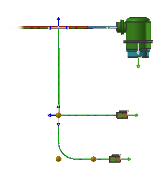

In this activity, you will apply radial blends to individual harness segments, and then rotate some of the connectors so they lay flat on the formboard.

Launch the Bend harness segments activity.
Use the Command Finder to search for Shape Segment and Rotate Component.